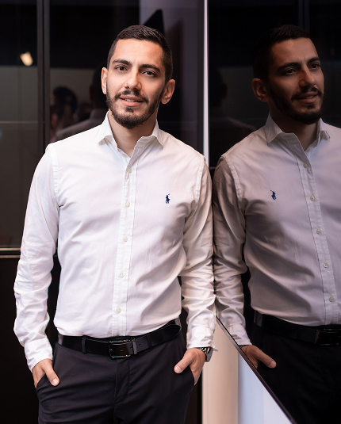

Иммиграционный адвокат в Израиле


с гражданином Израиля — хочу остаться легально
Основная процедура оформления статуса для супругов и партнёров — в браке и без него. Объясняем этапы, готовим документы, сопровождаем в МВД на всех ступенях.
Что происходит после СТУПРО: как временный статус превращается в постоянный и в гражданство, сколько занимает путь и от чего зависит результат.
Юридически оформленный тест для подтверждения биологического родства — именно тот, который принимает МВД. Не путать с ДНК «на еврейство».
Помогаем, когда архивных документов не хватает, есть сомнения по основаниям или уже получен отказ. Стандартное сопровождение репатриации без юридических сложностей — не наш профиль.
Изменение существующего статуса без выезда из страны — для тех, кто уже находится в Израиле
Отказ — не всегда окончательный ответ. Разбираем причину, проверяем документы и объясняем, какие действия возможны дальше
с такими ситуациями
без юридических сложностей

Да. Ступенчатая процедура МВД распространяется как на официально зарегистрированных супругов, так и на пары, состоящие в гражданском браке (ידועים בציבור). Важно документально подтвердить реальность отношений и совместного проживания. Конкретный маршрут зависит от вашей ситуации — уточните при первом обращении.
Нет, это принципиально разные вещи. ДНК-тест в иммиграционном контексте используется исключительно для подтверждения биологического родства — например, отцовства или связи с гражданином Израиля. Он не доказывает принадлежность к еврейскому народу и не является основанием для репатриации сам по себе. Кроме того, для МВД нужен юридически оформленный тест — обычный медицинский анализ не подойдёт.
Стоимость зависит от вида и сложности дела. После первичного разбора ситуации мы объясняем условия сопровождения, что именно входит в работу офиса и какие этапы предстоят. Напишите нам — расскажем подробнее применительно к вашему случаю.
Нет. Мы работаем с клиентами по всему Израилю. Консультации проводим онлайн или в офисе. В отдельных случаях возможен выезд к клиенту — формат согласуется индивидуально при первом обращении.
Стараемся ответить в день обращения. У каждого клиента есть общий WhatsApp-чат с командой офиса — это значит, что ваш вопрос не зависит от того, занят ли один конкретный сотрудник. В праздничные дни время ответа может увеличиться — мы предупреждаем об этом заранее.
Адвокат Михаэль Коберг зарегистрирован в Коллегии адвокатов Израиля. Вы можете проверить его лицензию в официальном реестре — ссылка на профиль есть на странице команды. У нас официальный сайт, реальный офис и возможность очной встречи до принятия какого-либо решения.
по иммиграционному праву